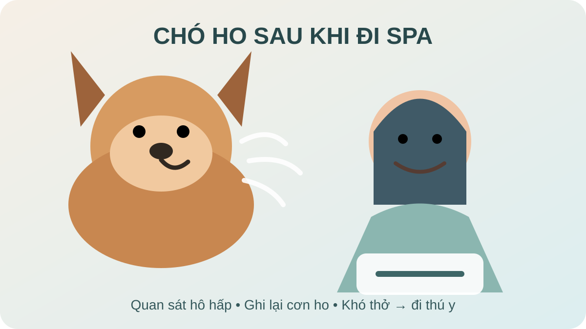

Chó ho sau khi đi Spa: khi nào cần đi thú y?
Trả lời nhanh: nếu chó chỉ ho một vài lần rồi hết, vẫn tỉnh táo, ăn uống và thở bình thường, bạn có thể ghi nhận thời điểm và theo dõi sát. Nhưng ho lặp lại, kéo dài, kèm thở khó/thở gắng sức, tím hoặc trắng niêm mạc, suy yếu hay ngã quỵ cần được bác sĩ thú y đánh giá sớm hoặc cấp cứu. Không nên mặc định Spa là nguyên nhân chỉ vì cơn ho xuất hiện sau buổi chăm sóc.

Đầu tiên: ho một lần hay ho lặp lại?
Điểm quan trọng nhất không phải là cơn ho xảy ra ngay sau Spa hay vài giờ sau đó, mà là tần suất, kiểu ho, khả năng thở và tình trạng toàn thân. VCA Animal Hospitals khuyến nghị thú cưng ho lặp lại hoặc không hết sau một thời gian ngắn nên được bác sĩ thú y đánh giá. Merck Veterinary Manual cũng xếp ho liên tục vào nhóm nên khám trong vòng 24 giờ; khó thở là dấu hiệu cần chăm sóc ngay.
Nếu có thể, hãy quay một đoạn video cơn ho. Âm thanh và tư thế của chó lúc ho có thể giúp bác sĩ phân biệt ho với hắt hơi ngược, ọe hoặc nôn.
Vì sao chó có thể ho sau một buổi Spa?
1. Kích ứng đường hô hấp trùng thời điểm
Bụi, khói, khí hoặc chất kích thích hít phải có thể gây viêm/kích ứng thanh quản. Merck ghi nhận viêm thanh quản ở chó có thể liên quan nhiễm trùng đường hô hấp trên hoặc kích ứng trực tiếp bởi bụi, khói, khí gây kích thích hay dị vật. Điều này không có nghĩa một sản phẩm Spa cụ thể là nguyên nhân; cần dựa vào bệnh sử và khám thú y.
2. Bệnh hô hấp đã bắt đầu trước đó
Một bệnh hô hấp có thể tình cờ biểu hiện rõ sau khi chó vừa đi Spa. Ho cũng có thể gặp trong các bệnh đường thở hoặc nhiễm trùng. Vì vậy, đừng dùng mốc thời gian để tự kết luận nguyên nhân.
3. Dị vật hoặc kích thích vùng họng
VCA lưu ý ho có thể liên quan dị vật mắc ở họng. Nếu cơn ho xuất hiện đột ngột, chó nuốt liên tục, cào miệng, ọe, chảy dãi nhiều hoặc có vẻ khó nuốt, nên liên hệ bác sĩ thú y thay vì cố đưa tay sâu vào họng.
4. Hắt hơi ngược bị nhầm là ho
Hắt hơi ngược thường tạo tiếng khịt/hít mạnh, chó đứng yên và kéo dài cổ; một đợt có thể kéo dài vài giây đến khoảng một phút rồi chó trở lại bình thường. Nếu bạn không chắc đó là ho hay hắt hơi ngược, video là cách hữu ích để mô tả cho bác sĩ.
Checklist 6 điểm nên kiểm tra tại nhà
1. Nhìn cách chó thở
Quan sát khi chó đang nghỉ: có phải gắng sức để hít vào, thở nhanh bất thường, không nằm yên được hay phát ra tiếng thở lạ không? Khó thở quan trọng hơn bản thân tiếng ho và cần được xử lý khẩn cấp.
2. Nhìn màu niêm mạc
Nướu hoặc lưỡi tím/xanh, trắng bất thường đi cùng khó thở hoặc suy yếu là dấu hiệu cấp cứu. Đừng chờ xem cơn ho có tự hết không.
3. Đếm và ghi lại cơn ho
Ghi thời điểm bắt đầu, số đợt, mỗi đợt kéo dài bao lâu, ho khi nghỉ hay sau vận động/uống nước. Theo dõi xu hướng giúp phân biệt một cơn thoáng qua với triệu chứng đang tăng dần.
4. Kiểm tra dấu hiệu đi kèm
Chú ý chảy mũi, sốt nếu đã được đo đúng cách, bỏ ăn, mệt, nôn/trớ, chảy dãi, thay đổi giọng sủa hoặc đau khi nuốt. Nếu chó đồng thời thở gấp sau Spa, hãy ưu tiên đánh giá hô hấp.
5. Nhớ lại những gì xảy ra trước cơn ho
Cơn ho bắt đầu trên đường về, sau khi uống nước, sau vận động hay khi vừa về nhà? Có tiếp xúc chó khác gần đây không? Thông tin này hữu ích hơn việc mặc định nguyên nhân là shampoo hay máy sấy.
6. Quay video nếu an toàn
Một video ngắn có thể giúp bác sĩ nhận biết kiểu triệu chứng. Không trì hoãn đi cấp cứu chỉ để quay video nếu chó đang khó thở.
Nên làm gì khi chó ho nhưng vẫn ổn định?
Cho chó nghỉ ở nơi thoáng, yên tĩnh; tránh vận động mạnh và tránh khói, xịt thơm hoặc các chất kích thích đường hô hấp. Theo dõi tần suất ho và các dấu hiệu đi kèm. Nếu ho lặp lại hoặc không hết sau thời gian ngắn, liên hệ bác sĩ thú y.
Không tự cho thuốc ho, thuốc cảm hoặc kháng sinh của người. Nguyên nhân ho ở chó rất đa dạng và việc dùng thuốc không phù hợp có thể che lấp triệu chứng hoặc gây hại.
Nếu cần cung cấp lịch sử chăm sóc, hãy ghi lại thời gian Spa, các thao tác đã thực hiện và thời điểm cơn ho xuất hiện. Nếu bé cần chăm sóc lông sau khi tình trạng sức khỏe đã ổn định, bạn có thể xem Spa thú cưng Bình Thạnh, Grooming chó mèo và đặt lịch Lumi Pet.
Khi nào cần đưa chó đi thú y?
Đi cấp cứu ngay nếu chó khó thở, thở gắng sức, niêm mạc tím/xanh hoặc trắng, ngã quỵ, suy yếu rõ hoặc có biểu hiện nghẹt đường thở. Merck xếp khó thở vào nhóm cần bác sĩ thú y ngay; VCA cũng khuyến nghị cấp cứu khi ho đi kèm khó thở hoặc hụt hơi.
Liên hệ bác sĩ trong ngày hoặc sớm nhất có thể nếu ho lặp lại, kéo dài, tăng dần, kèm chảy mũi nhiều, bỏ ăn, mệt, thay đổi giọng, đau khi nuốt hoặc bạn không phân biệt được ho với ọe/hắt hơi ngược.
Câu hỏi thường gặp
Chó ho vài tiếng sau khi đi Spa có bình thường không?
Không thể kết luận chỉ dựa vào thời điểm. Nếu chỉ ho rất ít rồi hết, chó vẫn thở và sinh hoạt bình thường, có thể theo dõi. Ho lặp lại hoặc kéo dài nên được bác sĩ thú y đánh giá.
Ho sau Spa có phải do shampoo hoặc máy sấy?
Không thể khẳng định như vậy nếu chưa đánh giá nguyên nhân. Ho có thể liên quan kích ứng, dị vật, bệnh hô hấp hoặc nhiều vấn đề khác. Hãy ghi lại sản phẩm/thao tác đã dùng nếu bác sĩ cần bệnh sử.
Có nên tự cho chó uống thuốc ho của người?
Không. Chỉ dùng thuốc khi bác sĩ thú y đã đánh giá và hướng dẫn phù hợp cho chó.
Ho và thở gấp cùng lúc thì sao?
Nếu có khó thở hoặc thở gắng sức, hãy coi đây là dấu hiệu khẩn cấp. Nếu chỉ thở nhanh do vừa vận động nhưng nhanh chóng trở lại bình thường, vẫn nên theo dõi sát diễn tiến.
Nguồn tham khảo
- VCA Animal Hospitals — Urgent Care: Runny Nose, Coughing or Sneezing.
- Merck Veterinary Manual — When to See a Veterinarian.
- Merck Veterinary Manual — Laryngitis in Dogs.
- VCA Animal Hospitals — Reverse Sneeze in Dogs.
Bài liên quan
- Chó thở gấp sau khi đi Spa: khi nào cần lo?
- Chó chảy dãi sau khi đi Spa: khi nào cần lo?
- Chó hắt hơi sau khi tắm: khi nào cần kiểm tra?
Trao đổi tình trạng của bé trước khi đặt lịch để Lumi Pet tư vấn bước phù hợp. Nếu bé đang có triệu chứng hô hấp bất thường, hãy ưu tiên bác sĩ thú y.